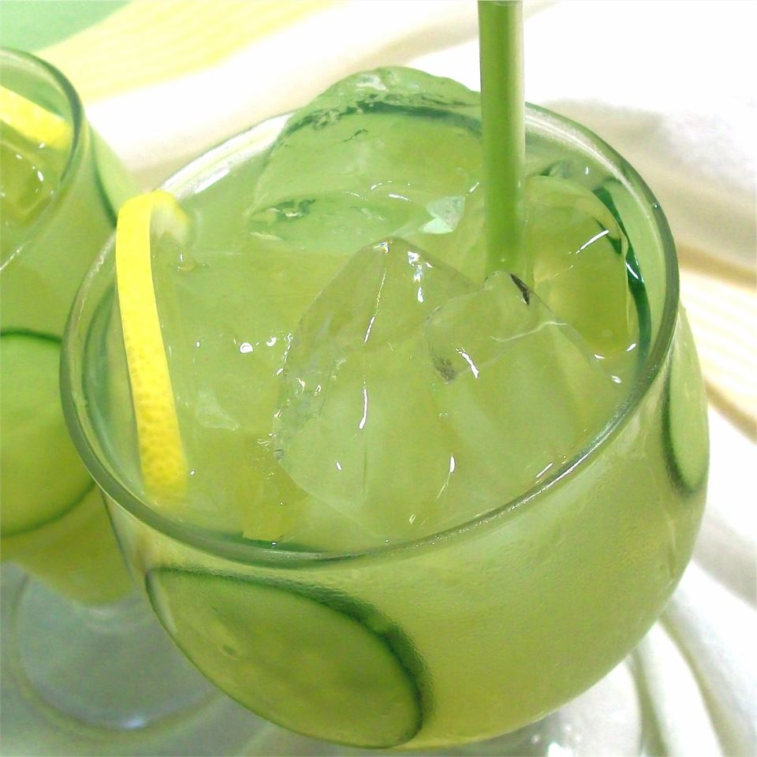

Refreshing Cucumber Lemonade
(Recipe and image used were from Allrecipes)
A refreshing and healthy drink that is perfect for this summer season! Best served cold with cucumber and lemon slices.

Ingredients
- 1 cup water
- ½ cup white sugar
- 1 cucumber, sliced
- 6 eaches lemons, juiced
Preparation
-
Make a simple syrup by stirring the water and sugar together in a saucepan over medium heat; heat until just about to boil and the sugar has dissolved. Place in refrigerator 30 minutes, or until cool.
-
Place the cucumber slices in a blender or food processor; blend until mashed into a pulp. Pour the cucumber pulp into a fine mesh strainer place over a bowl to catch the liquid; allow to sit until you have about 2/3 cup of liquid from the cucumber, about
15 minutes.
-
Stir the simple syrup, cucumber liquid, and lemon juice together in a pitcher. Serve cold.
-
Enjoy!